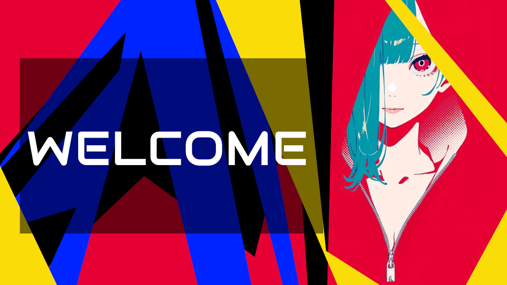

STUDIO NOTES
That's how we started...

Hello and welcome! I’m pleased to have you here on this platform, a project that has been in the making for years. It has not only involved construction, but also a deep reflection on the concept behind it.
This space represents the culmination of an authentic and original vision. Here, you'll find a blend of personal aesthetics and meaningful purpose. It has been created with the intention of sharing my work, research, and artistic evolution, along with the knowledge and reflections I've gathered over time.
A crucial aspect of this project is its independence. The resources and materials you’ll find here are the result of a long-term research and development process. They are not generic or mass-produced content; each element has been designed with care, intention, and originality.
Building an independent platform like this is a significant achievement for me. It gives me the freedom to present my work and simultaneously provide my students with educational tools that truly support their growth and learning.
I am committed to offering high-quality content, materials that stand out from what is typically found on other platforms. Everything I share here is created with dedication, attention to detail, and a deep sense of responsibility towards artistic integrity and educational value.
I sincerely hope this space becomes a valuable resource for you, and that you return often.
Welcome!
NOTAS DEL ESTUDIO
Así comenzamos...
¡Hola y bienvenido! Me complace recibirte en esta plataforma, un proyecto que ha estado gestándose durante años. No solo ha sido un trabajo de construcción, sino también un proceso de reflexión profunda sobre el concepto que lo sostiene.
Este espacio representa la culminación de una visión auténtica y original. Aquí encontrarás una combinación de estética personal y un propósito significativo. Se ha creado con la intención de compartir mi trabajo, mis investigaciones y mi evolución artística, además del conocimiento y las reflexiones que he acumulado a lo largo del tiempo.
Un aspecto crucial de este proyecto es su independencia. Los recursos y materiales que hallarás aquí son fruto de un proceso de investigación y desarrollo a largo plazo. No se trata de contenidos genéricos ni producidos en masa; cada elemento ha sido diseñado con cuidado, intención y originalidad.
Construir una plataforma independiente como esta es un logro importante para mí. Me brinda la libertad de presentar mi trabajo y, al mismo tiempo, de proporcionar a mis estudiantes herramientas educativas que realmente apoyen su crecimiento y aprendizaje.
Mi compromiso es ofrecer contenido de alta calidad, materiales que se diferencien de lo que normalmente se encuentra en otras plataformas. Todo lo que comparto aquí está creado con dedicación, esmero y un profundo sentido de responsabilidad hacia la integridad artística y el valor educativo.
Espero sinceramente que este espacio se convierta en un recurso valioso para ti y que regreses con frecuencia.
¡Bienvenido!